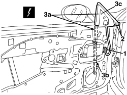

7005D29 FRONT CHANNEL/SEAL FOR FRONT SIDE DOOR LOWERING WINDOW GLASS (ONE), LEFT OR RIGHT - R.R.
- Path
- Procedures > 70 FITTINGS > 7005 PASSENGER COMPARTMENT FRONT SIDE DOORS > 7005D FRONT DOOR WINDOW GLASSES > 7005D29 FRONT CHANNEL/SEAL FOR FRONT SIDE DOOR LOWERING WINDOW GLASS (ONE), LEFT OR RIGHT - R.R.
- Kind
- repair procedure (removal / refitting; the operation number is the code)
- Applies to
- all engines; all production periods
- Interactive page
- https://sloeber94.github.io/elrnDB-aBrrSpdr/en/#/946002511
Applies to: all engines; all production periods
 Removing
Removing
 Refitting
RefittingOp. 7005E38 FRONT SIDE DOOR INTERIOR HANDLE- R.R.
Op. 7005M14 SWITCH UNIT ON DRIVER'S FRONT DOOR - R.R.
- Or, alternatively
Op. 7005M12 PASSENGER SIDE FRONT DOOR ELECTRICALLY OPERATED WINDOW SWITCH - R.R.
Op. 7040E24 LOWER COURTESY LIGHT IN DOOR PANEL - R+R
Op. 7005E12 CORNER COVER FOR ONE FRONT SIDE DOOR, LH OR RH - R.R.
Op. 7005E11 LH OR RH FRONT DOOR INNER PANEL - R+R WITH FOULING PARTS REMOVED
Op. 7005E13 OUTER CORNER COVER FOR FRONT SIDE DOOR - R.R.
Op. 7005A04 FRONT SIDE DOOR WATER GUARD PROTECTION - R.R. OR POSITION WITH DOOR PANEL REMOVED
Op. 5570T90 FRONT SPEAKER (ONE), LEFT OR RIGHT - R.R
1. Disconnect the electrical connection.
Description | Component |
|---|---|
DRIVER'S DOOR CONTROL UNIT (NPG) | |
PASSENGER SIDE DOOR JUNCTION UNIT (NPP) |
2. Detach the adhesive strips.
3. Release the duct (3a) releasing it from the guide (3b) and the from the triangular element (3c) of the door structure.

Applies to: all engines; all production periods
Refitting
Removing- Check that the channel is not damaged.
- Fit the duct on the triangular element and on the guide.
- Attach the adhesive strips, after having cleaned and degreased the area of the door frame involved using heptane.
- Connect the electrical connection.
Op. 5570T90 FRONT SPEAKER (ONE), LEFT OR RIGHT - R.R
Op. 7005A04 FRONT SIDE DOOR WATER GUARD PROTECTION - R.R. OR POSITION WITH DOOR PANEL REMOVED
Op. 7005E13 OUTER CORNER COVER FOR FRONT SIDE DOOR - R.R.
Op. 7005E11 LH OR RH FRONT DOOR INNER PANEL - R+R WITH FOULING PARTS REMOVED
Op. 7005E12 CORNER COVER FOR ONE FRONT SIDE DOOR, LH OR RH - R.R.
Op. 7040E24 LOWER COURTESY LIGHT IN DOOR PANEL - R+R
Op. 7005M12 PASSENGER SIDE FRONT DOOR ELECTRICALLY OPERATED WINDOW SWITCH - R.R.
Topics linked from this page (12)
- 5570T90 FRONT SPEAKER (ONE), LEFT OR RIGHT - R.R
- 7005A04 FRONT SIDE DOOR WATER GUARD PROTECTION - R.R. OR POSITION WITH DOOR PANEL REMOVED
- 7005D14 FRONT SIDE DOOR DESCENDING WINDOW GLASS - R.R. WITH DOOR PANEL (AND SUPPORT FRAME) REMOVED
- 7005E11 LH OR RH FRONT DOOR INNER PANEL - R+R WITH FOULING PARTS REMOVED
- 7005E12 CORNER COVER FOR ONE FRONT SIDE DOOR, LH OR RH - R.R.
- 7005E13 OUTER CORNER COVER FOR FRONT SIDE DOOR - R.R.
- 7005E38 FRONT SIDE DOOR INTERIOR HANDLE- R.R.
- 7005M12 PASSENGER SIDE FRONT DOOR ELECTRICALLY OPERATED WINDOW SWITCH - R.R.
- 7005M14 SWITCH UNIT ON DRIVER'S FRONT DOOR - R.R.
- 7040E24 LOWER COURTESY LIGHT IN DOOR PANEL - R+R
- M066 DRIVER'S DOOR CONTROL UNIT (NPG)
- M067 PASSENGER DOOR CONTROL UNIT (NPP)